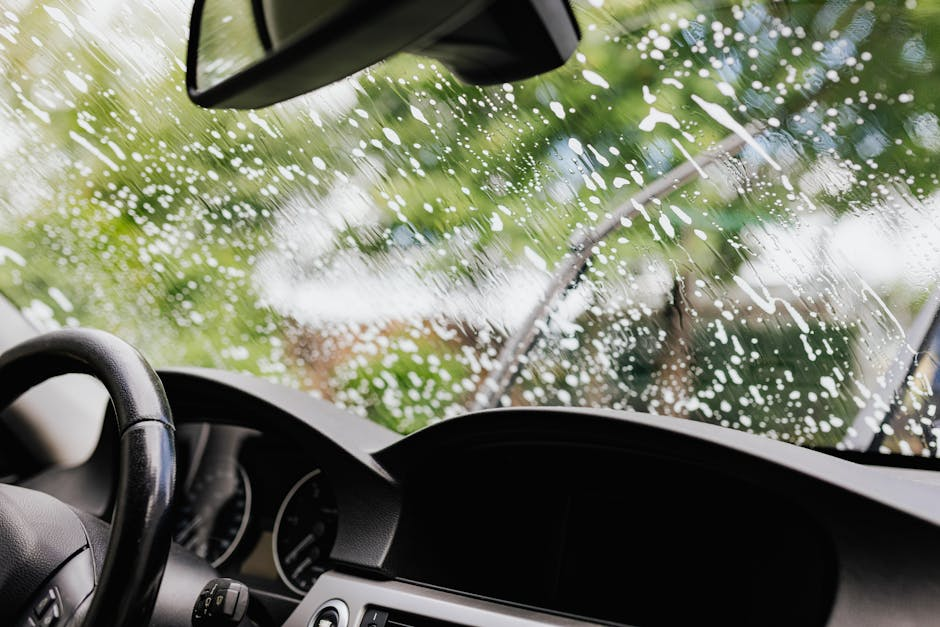
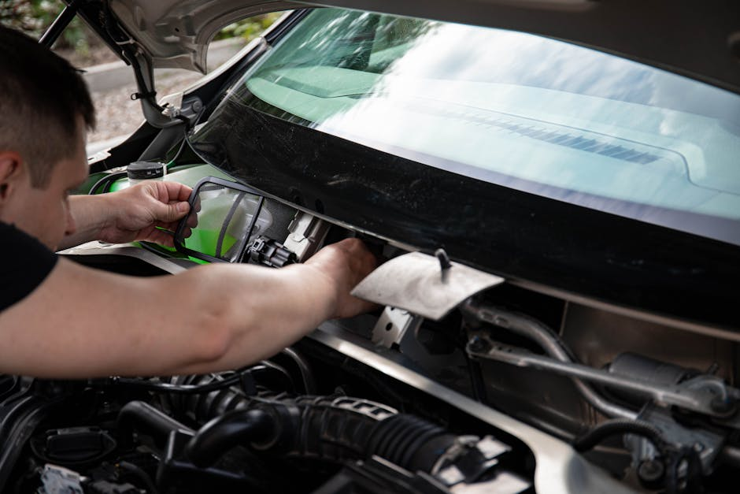

Your Trusted Base for Crystal Clear Auto Glass Solutions
Don't let a damaged view compromise your safety on the road. From swift chip repair to comprehensive windshield replacement, we deliver precision service when you need it most.

Don't let a damaged view compromise your safety on the road. From swift chip repair to comprehensive windshield replacement, we deliver precision service when you need it most.

At Thurlebase, we understand that your vehicle's structural integrity relies heavily on quality auto glass. A cracked or compromised window is not just a visual nuisance; it is a critical safety hazard for you and your passengers.
We are dedicated to providing drivers with reliable, high-grade windshield replacement and repair services. Our focus is on connecting you with the expertise needed to handle everything from a minor chip repair to a complete car window replacement, ensuring your vehicle is secure against the elements.
Your safety is our priority, and we are here to make the process of restoring your auto glass as seamless and efficient as possible.
Professional solutions tailored to restore your vehicle's safety and clarity.
When damage is too extensive for a simple fix, a full windshield replacement is necessary. We ensure the use of premium glass that meets strict safety standards, restoring your vehicle's structural strength and providing an unobstructed view of the road.

Small rocks and debris can cause minor damage that quickly spreads if ignored. Our swift chip repair and targeted windshield repair services seal the damage, preventing further cracking and saving you the cost of a complete replacement.

Smashed side windows or a shattered rear glass leave your vehicle vulnerable to weather and theft. We provide precise car window replacement services, clearing away broken glass and installing a perfect fit to secure your vehicle's cabin.

"A rock hit my car on the highway and I needed a windshield replacement fast. The service was incredibly professional, and the new auto glass looks perfect. Highly recommend!"
— Sarah M., 2026
"I thought I needed a whole new window, but they suggested a simple chip repair instead. It saved me a lot of money and the crack is virtually invisible now."
— David L., 2026
"My car was broken into and the side window was shattered. The team handled the car window replacement quickly and cleaned up all the broken glass. Great peace of mind."
— Michael T., 2026
A standard windshield replacement usually takes about one to two hours to complete. After the installation, we recommend waiting an additional hour before driving to allow the high-quality urethane adhesive to properly cure and secure the auto glass.
Not all damage can be repaired. Generally, a chip repair is successful if the damage is smaller than a quarter and not located directly in the driver's line of sight. If the crack is larger or spreading, a full windshield replacement is required for your safety.
Yes, we provide comprehensive car window replacement services. Whether your side window was shattered due to a break-in or your rear glass was damaged in a collision, we can source and install the correct tempered auto glass for your specific vehicle make and model.
We prioritize your safety by using high-quality auto glass that meets or exceeds Original Equipment Manufacturer (OEM) standards. This ensures that your new windshield or car window fits perfectly and provides the structural integrity your vehicle was designed to have.
After a windshield replacement, we advise waiting at least 48 hours before taking your vehicle through a high-pressure car wash to ensure the seals are completely set. However, a simple windshield repair usually requires no wait time, and you can wash your car immediately.
Need immediate auto glass assistance? Fill out the form below with your vehicle details and the type of service required, and a representative will contact you with a customized estimate.
Austin, TX area
Monday - Friday: 8:00 AM - 6:00 PM